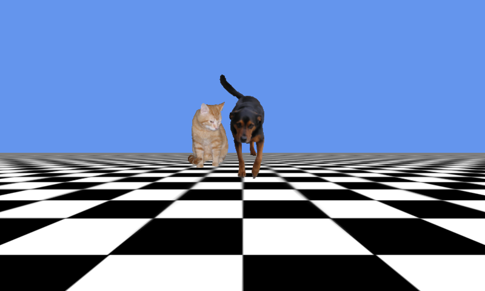

Audio 3D
Ported from Microsoft's XNA 4.0 Audio 3D sample.
Source for this sample on GitHub ↗

Play ▸Opens in a new tab. Click the game to enable audio in your browser.
About this sample
A cat circles the scene and plays one of three short sounds; a stationary dog alternates a looping bark with a pause. The audio manager tracks each sound's emitter and the camera's listener to demonstrate distance, stereo position and Doppler pitch.
Controls
| Action | Control |
|---|---|
| Turn the listener | Left/Right arrow keys or gamepad left stick |
| Move the listener | Up/Down arrow keys or gamepad left stick |
| Exit | Escape or gamepad Back |